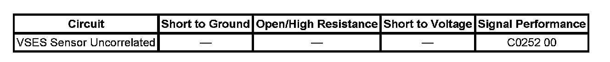

C0252
DTC C0252
DTC Descriptor
DTC C0252 00
VSES Sensor Uncorrelated
Diagnostic Fault Information
Perform the Diagnostic System Check - Vehicle prior to using this diagnostic procedure. Initial Inspection and Diagnostic Overview

Circuit/System Description
The vehicle stability enhancement system (VSES) is activated by the electronic brake control module (EBCM) and calculates the desired yaw rate and comparing it to the actual yaw rate input. The desired yaw rate is calculated from measured steering wheel position, vehicle speed, and lateral acceleration. The difference between the desired yaw rate and actual yaw rate is the yaw rate error, which is a measurement of oversteer or understeer. If the yaw rate error becomes to large, the EBCM will attempt to correct the vehicle's yaw motion by applying differential braking to the left or right front wheel.
Conditions for Running the DTC
^ The steer angle has been centered.
^ The VSES is active.
^ The direction (understeer or oversteer) of the yaw rate error has not changed.
^ The centered lateral acceleration value is less than 0.5 g.
^ The yaw rate error is less than 6 degrees/second.
^ The side slip error is greater than 1.8 meters/second*second.
Conditions for Setting the DTC
One of the following conditions exists:
^ The DTC sets when VSES is engaged for 10 seconds with the yaw rate error always in either understeer or oversteer.
^ The yaw rate error is greater then 10 degrees/second for 5 seconds, and the yaw has not changed and the lateral acceleration is less than 0.5 g.
Action Taken When the DTC Sets
One or more of the following actions may occur:
^ The EBCM disables the ABS/TCS/VSES for the duration of the ignition cycle.
^ The ABS and VSES indicators illuminate.
^ The driver information center (DIC) displays the Service Traction Control and Stabilitrak message.
Conditions for Clearing the DTC
^ The condition for the DTC is no longer present.
^ The EBCM automatically clears the history DTC when a current DTC is not detected in 100 consecutive drive cycles.
Diagnostic Aids
The following conditions can cause this concern:
^ Improper steering alignment.
^ An open, a short to ground, or a short to voltage.
^ An internal lateral accelerometer failure.
^ An EBCM internal failure.
Reference Information
Schematic Reference
Antilock Brake System Schematics
Connector End View Reference
Antilock Brake System Connector End Views
Description and Operation
ABS Description and Operation (Under 8600 GVW ) ABS Description and Operation (Equal to or Over 8600 GVW)
Electrical Information Reference
^ Circuit Testing
^ Connector Repairs
^ Testing for Intermittent Conditions and Poor Connections
^ Wiring Repairs
Scan Tool Reference
Scan Tool Data List for EBCM
Circuit/System Verification
Clear DTC, test drive vehicle under normal driving conditions.
Verify DTC resets.
Circuit/System Testing
1. Ignition OFF, disconnect the yaw rate sensor/lateral accelerometer and the steering wheel position sensor connectors.
2. Ignition ON, measure for 4.8-5.2 volts at SAS sensor 5-volt reference circuit or battery positive reference at the yaw rate sensor and ground.
^ If over 5.2 volts, test each 5-volt reference circuit for a short to voltage. If the circuits tests normal, replace the EBCM.
^ If the SAS sensor is under 4.8 volts, test each 5-volt reference circuit for short to ground. If the circuits tests normal, replace the EBCM.
^ If the SAS sensor over 5.2 volts, test each 5-volt reference circuit for a short to voltage. If the circuits tests normal, replace the EBCM.
^ If the yaw rate sensor is under battery positive voltage, test each 12-volt reference circuit for short to ground. If the circuits tests normal, replace the EBCM.
Repair Instructions
Perform the Diagnostic Repair Verification after completing the diagnostic procedure. Verification Tests
Control Module References for EBCM
Repair Verification
Diagnostic Repair Verification